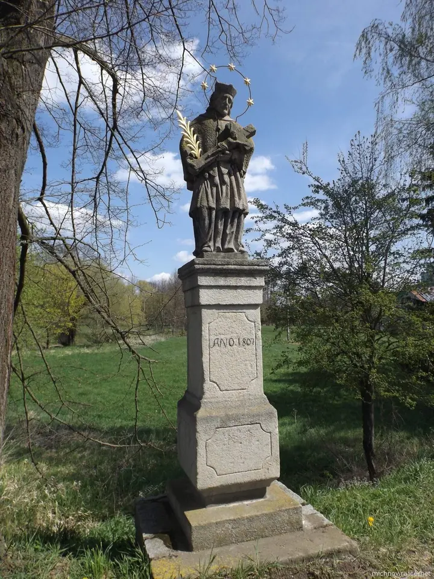
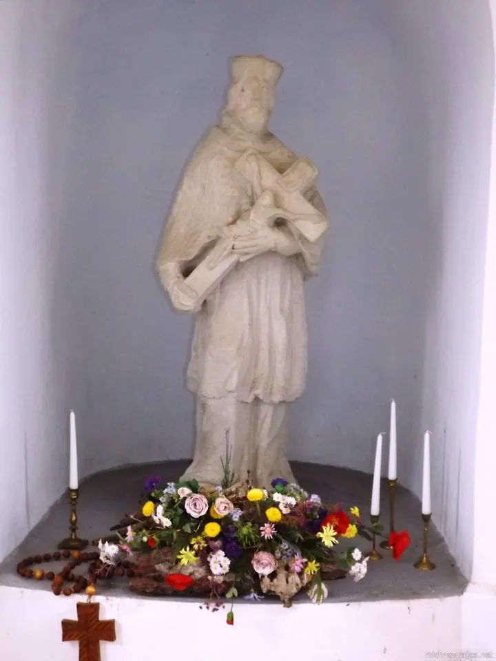
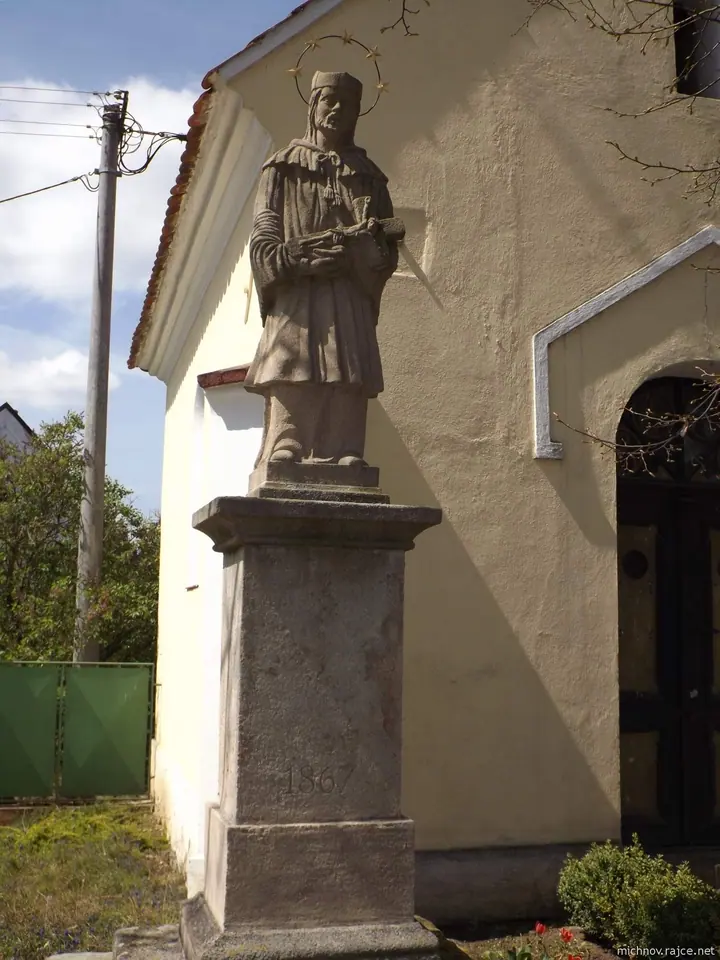
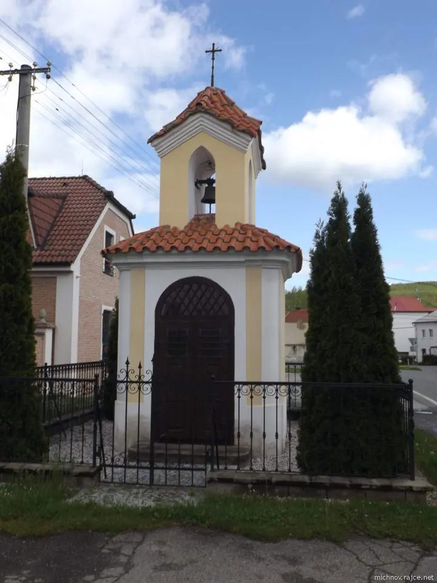
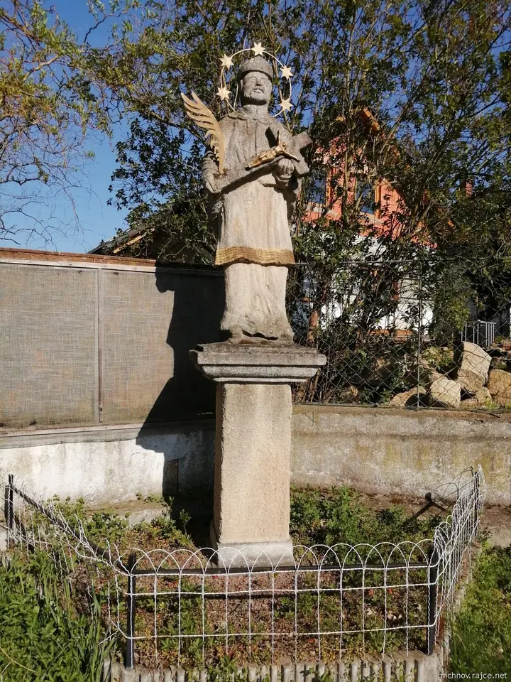
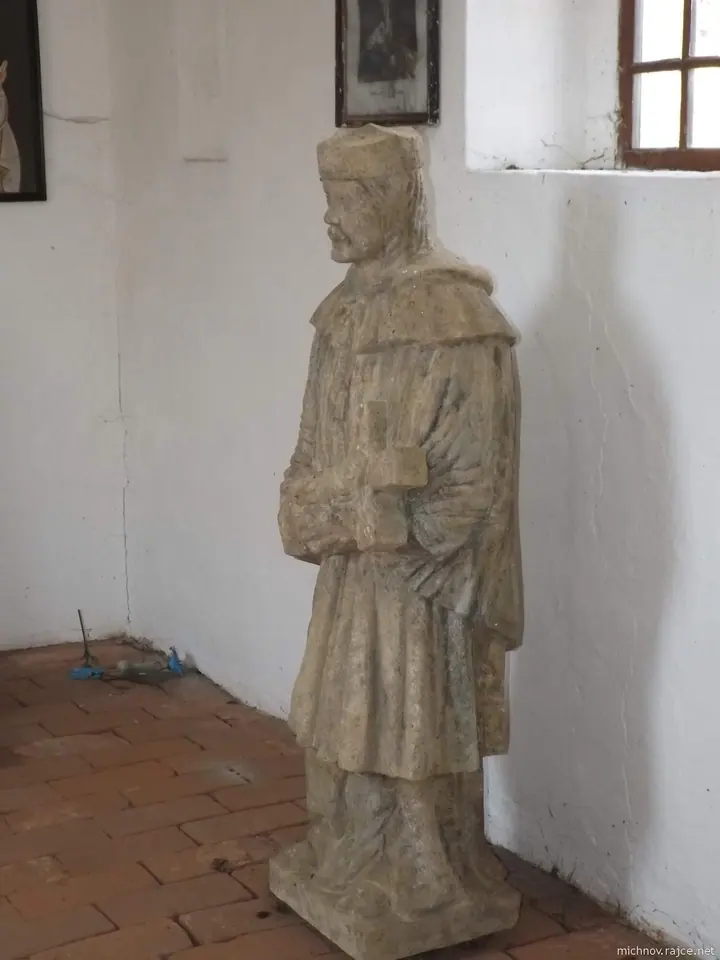
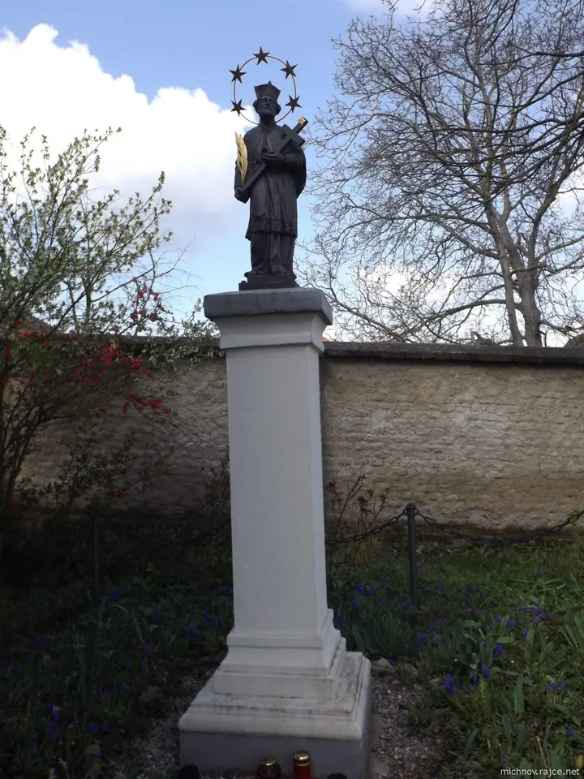
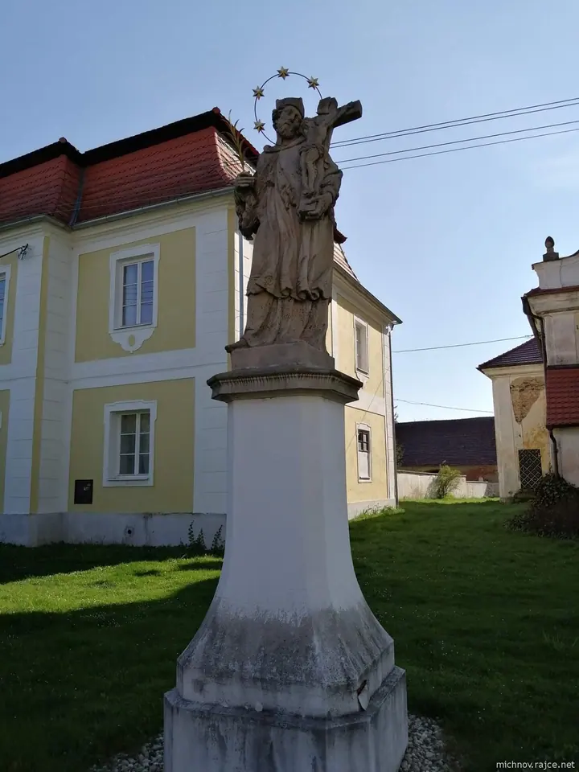

Michal
Toulky po naší krásné zemičce
Zeptat se na termín →(01) Ahoj
Jmenuji se Michal a jsem z Lužné. Rád se courám naší přírodou a když už jdu, tak občas i fotím. Po cestě se nejčastěji zastavím u kapliček a starých soch na návsích .
(02) Co fotím
Focení, které má příběh
(04) Postup
Jak to probíhá
Od první zprávy po hotovou galerii.
-
1
Krok 1 z 4
Vyrazím na cestu
Vezmu batoh, foťák Fujifilm a jdu se courat přírodou, často od vesnice k vesnici.
-
2
Krok 2 z 4
Zastavím se a fotím
Když narazím na kapličku, sochu nebo pěkné místo, udělám pár fotek.
-
3
Krok 3 z 4
Dohledám popisky
Doma si k místům dohledám, co se o nich ví. Hodně mi s tím pomáhá Wikipedie.
-
4
Krok 4 z 4
Nahraju album
Fotky skládám do alb na Rajčeti, kde si je můžete prohlédnout a okomentovat.
Když už jdu, tak občas i fotím.
(05) Za objektivem
Ahoj, jsem Michal
Jsem turista, cestovatel a sběratel. Nejradši chodím pěšky po naší krásné zemičce a cestou si fotím, co mě zaujme: kapličky, sochy svatých, památky na návsích i krajinu kolem.
Fotím na digitální foťák Fujifilm. Sám o sobě říkám, že fotit neumím, ale fotky ukládám do alb na Rajčeti, kde se jich za ta léta nasbíralo přes 4 600. S popisky k albům mi hodně pomáhá Wikipedie.
Co mám rád, asi poznáte po prohlédnutí alb: přírodu, mašinky a pivo. Děkuji vám za čas, který mým fotkám věnujete, a za každý komentář.
- 01Jsem Michal z Lužné
- 02Jsem turista a cestovatel
- 03Jsem sběratel
- 04Fotím na Fujifilm
- 05Mám rád mašinky a pivo
- 06S popisky mi pomáhá Wikipedie
Michal
Michal · Turista, cestovatel a fotograf z toulek
Kde najdu všechny vaše fotky?
Alba mám na Rajčeti, na profilu michnov. Několik alb najdete i na profilu pacosi2012, tam jsem pod Michalem.
Na co fotíte?
Na digitální foťák Fujifilm.
Co nejčastěji fotíte?
Přírodu, kapličky, sochy a památky, které potkám na výletech, a taky mašinky.
Jak se s vámi spojit?
Nejlépe e-mailem na michalzluzne@seznam.cz. Budu rád i za komentář pod albem.
(07) Kontakt
Napište mi pár řádků
Napište pár vět o tom, co si představujete, a termín, který se vám hodí.
michalzluzne@seznam.cz- Portfolio portfolio
- Lužná · Česko